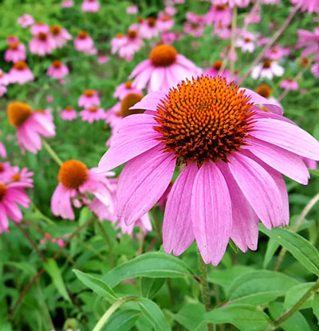

Cultivating Beauty Since 1939
We don't just stop at providing stunning plants and planters—we're also your premier destination for expert landscaping services. With decades of experience under our belt, our team specializes in transforming outdoor spaces into lush, vibrant landscapes that reflect your unique style and personality.
From initial consultation to final installation, we work closely with you to understand your vision and bring it to life. Whether you're dreaming of a serene garden retreat, a functional outdoor living area, or a colorful floral display, we have the expertise and creativity to make it a reality.
Our comprehensive landscaping services cover all aspects of design and maintenance, including:
- Custom Landscape Design: We tailor our designs to suit your specific needs and preferences, creating outdoor spaces that are both beautiful and functional.
- Plant Selection and Installation: With our extensive knowledge of plant species and growing conditions, we'll help you choose the perfect plants for your landscape and ensure they're installed with care.
- Hardscaping Features: From patios and pathways to retaining walls and water features, we incorporate a variety of hardscaping elements to enhance the beauty and functionality of your outdoor space.
- Seasonal Maintenance: Our team provides ongoing maintenance services to keep your landscape looking its best year-round, including pruning, mulching, fertilizing, and more.
- Specialty Services: In addition to traditional landscaping, we also offer specialty services such as irrigation system installation, landscape lighting, and lawn care.
Whether you're starting from scratch or looking to revitalize an existing landscape, Hocott's Garden Center is here to help you achieve your outdoor living dreams. Contact us today to schedule a consultation and take the first step towards transforming your outdoor space into a breathtaking retreat.